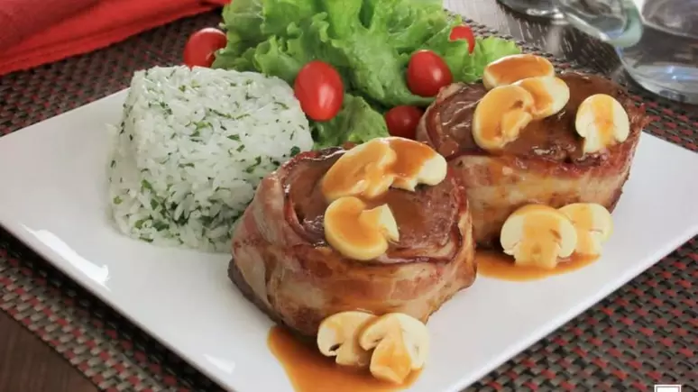
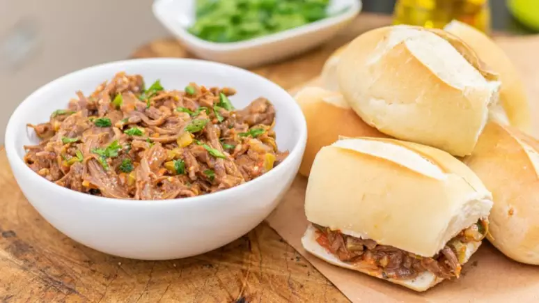
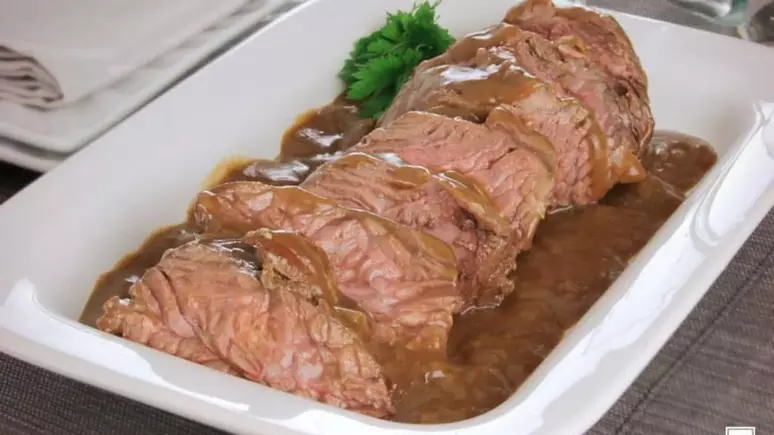
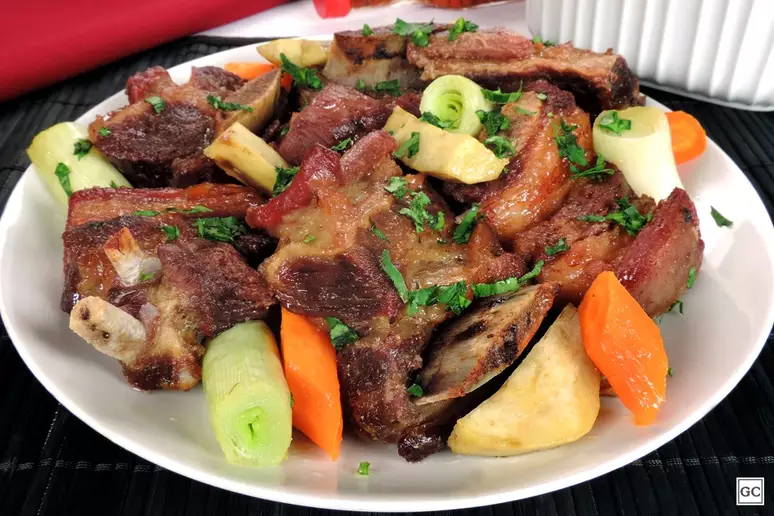

RECEITAS
"Estas são algumas ideias de receitas deliciosas usando nossos produtos!"
Medalhão de filé-mignon ao molho madeira
Ingredientes
- 6 medalhões de filé-mignon
- Sal e pimenta-do-reino a gosto
- 6 fatias finas de bacon
- 4 colheres (sopa) de manteiga
- 1 cebola ralada
- 1 colher (sopa) de farinha de trigo
- 1 e 1/2 xícara (chá) de vinho tinto seco
- 1 xícara (chá) de champignon laminado
Modo de Preparo
- Tempere os medalhões de filé-mignon com sal e pimenta-do-reino.
- Envolva cada medalhão com uma fatia de bacon.
- Em uma frigideira, derreta a manteiga e doure os medalhões de todos os lados. Reserve.
- Na mesma frigideira, refogue a cebola até dourar.
- Adicione a farinha de trigo e mexa bem.
- Aos poucos, adicione o vinho tinto seco, mexendo sempre até obter um molho homogêneo.
- Volte os medalhões à frigideira, adicione o champignon laminado e deixe cozinhar por alguns minutos.
- Sirva os medalhões acompanhados do molho preparado.
Sanduíche de carne louca
Ingredientes
- 1/2 xícara (chá) de azeite
- 1kg de fraldinha limpa
- 4 xícaras (chá) de água
- 1 cebola picada
- 1 colher (sopa) de alho picado
- Sal a gosto
- 1 canela em pau
- 4 xícaras (chá) de tomate picado
- 1 pimenta dedo-de-moça picada
- 5 colheres (sopa) de salsa picada
- 5 colheres (sopa) de cebolinha verde picada
- 2 colheres (sopa) de orégano
- 8 pães franceses
Modo de Preparo
- Em uma panela de pressão, aqueça o azeite em fogo alto e então frite a carne até dourar de todos os lados.
- Adicione a água, a cebola, o alho, o sal, a canela, o tomate e a pimenta, tampe e cozinhe por 1 hora depois de iniciada a pressão.
- Espere esfriar e desfie a carne com um garfo.
- Misture a salsa, a cebolinha, o orégano e, se desejar, mais azeite e sal.
- Deixe na geladeira por 4 horas.
- Sirva em seguida como recheio no pão francês.
Fraldinha com alho e mostarda
Ingredientes
- 1kg de fraldinha limpa (peça)
- Sal e pimenta-do-reino a gosto
- 4 colheres (sopa) de óleo
- 1 cebola picada
- 5 dentes de alho amassados
- 6 colheres (sopa) de mostarda
- 2 cubos de caldo de carne
- 1/3 xícara (chá) de molho de soja
- 1 litro de água quente
Modo de Preparo
- Tempere a fraldinha com sal e pimenta.
- Em uma panela de pressão, aqueça o óleo em fogo alto e doure a carne. Retire e reserve.
- Na mesma panela, refogue a cebola e o alho por 3 minutos.
- Junte metade da mostarda, o caldo de carne, o molho de soja e refogue por 4 minutos.
- Volte a carne para a panela, regue com água quente, tampe e cozinhe em fogo baixo por 30 minutos, após iniciada a pressão.
- Desligue e deixe a pressão sair naturalmente.
- Abra a panela, retire a carne e volte a panela com molho ao fogo médio.
- Adicione o restante da mostarda e deixe o molho reduzir pela metade.
- Acerte o sal.
- Fatie a carne, regue com o molho e sirva decorada como desejar.
Costela bovina com alho-poró e legumes
Ingredientes:
- 2kg de costela bovina com osso em pedaços
- Sal e pimenta-do-reino a gosto
- 4 dentes de alho amassados
- 2 colheres (sopa) de extrato de tomate
- 1 colher (chá) de molho inglês
- 1 cubo de caldo de carne
- 1 xícara (chá) de água
- 2 talos de alho-poró em pedaços
- 2 batatas-doces em tiras
- 2 cenouras médias em rodelas
- 4 colheres (sopa) de azeite
- 2 colheres (sopa) de tomilho fresco
Modo de Preparo
- Coloque a costela em uma fôrma, tempere com sal, pimenta e leve ao forno alto, preaquecido, por 30 minutos ou até dourar.
- Em uma tigela, misture o alho, o extrato de tomate, o molho inglês e o caldo de carne dissolvido na água.
- Regue a carne, cubra com papel-alumínio e volte ao forno médio, preaquecido, por 1 hora.
- Em uma panela, cozinhe o alho-poró, a batata e a cenoura em água fervente com sal por 3 minutos e escorra.
- Espalhe em uma fôrma, tempere com o azeite, sal, pimenta-do-reino e o tomilho.
- Leve ao forno médio, preaquecido, por 25 minutos.
- Desligue e junte em uma travessa com a costela.
- Por fim, regue a costela com o molho da fôrma e sirva.
Bolinho de carne
Ingredientes
- 500 gramas de carne patinho
- Meia cebola picada e dois dentes de alho
- Óleo para fritar e sal a gosto
- Pimenta do reino a gosto
- Tempero de ervas a gosto, como páprica picante, tomilho, alecrim, cebola e alho
- 250 ml de água e 350 ml de leite
- 250 gramas de farinha de trigo e 1 ovo
- Farinha de rosca para empanar
- Amido de milho para empanar
Modo de Preparo
- Coloque a carne em cubos com o óleo, cebola e alho picado na panela de pressão.
- Deixe a carne dourar com a panela ainda com a tampa aberta.
- Em seguida, adicione o sal e a pimenta do reino a gosto, o tempero especial a base de ervas e o extrato de tomate.
- Misture bem, tampe a panela e deixe a carne cozinhar por cerca de 30 minutos.
- Após o cozimento, desfie a carne.
- Logo depois, misture o leite e a farinha de trigo e despeje na panela onde está a carne.
- Mexa bastante até que se incorpore bem.
- Passe para uma travessa e leve à geladeira por cerca de 1 hora.